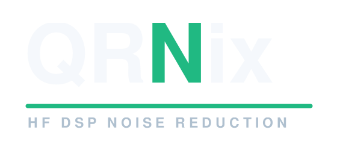

Line output
Preferred. Set it low first, then raise only until the normal listening level is clean and CLIP stays clear.

Connection guide
QRNix belongs between a controlled radio audio source and your speaker or amplifier. Set the source level once, then leave it stable for reliable noise reduction.
Signal path
Connection steps
Why level matters
Spectral mode stores its captured noise profile in absolute digital levels. Changing the input level after capture makes the profile stale, which can lead to over- or under-suppression. The CLIP indicator exists to make the initial level setting visible without test equipment.
Preferred. Set it low first, then raise only until the normal listening level is clean and CLIP stays clear.
Usable with care. Keep the radio volume low at first and use CLIP as the hard limit.
Requires a proper attenuating interface before QRNix. Do not connect it directly to the current line input.
If audio is wrong
Return to Bypass, check that QRNix is powered, confirm the radio is feeding line in, and verify that the listening system is connected to QRNix line out and powered.
Lower the radio source level. A speaker-level output must not feed the current QRNix line input directly.
Capture again during a representative noise-only moment. If the band changed after capture, the old profile is no longer representative.